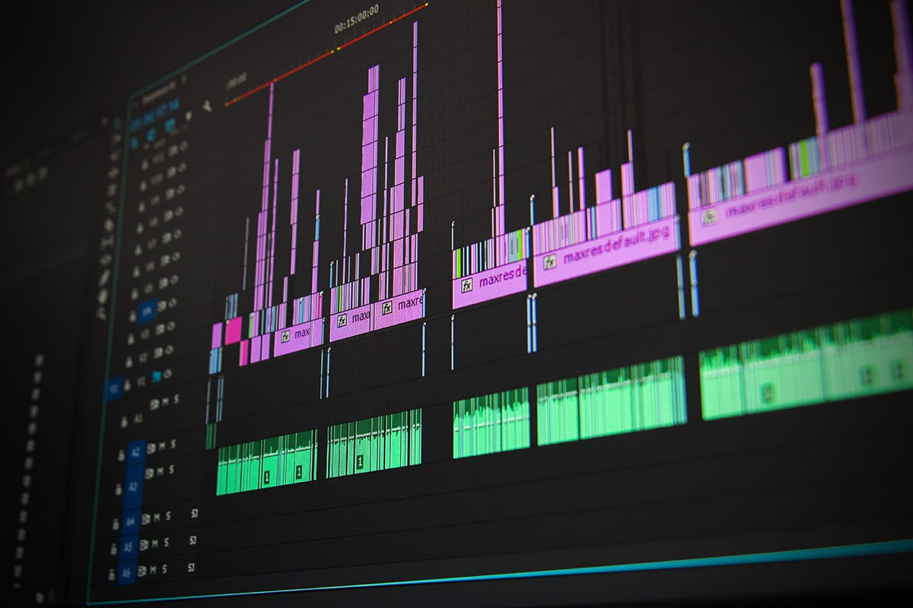

PROGRAMMING
Being a programmer is like being an architect of the digital world, designing and constructing intricate systems with lines of code. It's a constant journey of problem-solving, creativity, and relentless learning, as technology evolves at a rapid pace. The satisfaction of seeing your creations come to life and the ability to shape the future through innovation make it an incredibly rewarding experience.
PHOTOGRAPHY

Being a photographer is like painting with light, capturing moments in time and transforming them into timeless art. It's a blend of technical skill, artistic vision, and human connection, as I strive to tell stories through my lens. The thrill of capturing the perfect shot and the joy of sharing those moments with others make it an incredibly fulfilling profession.
VIDEO EDITING

Being a video editor is like being a visual storyteller, crafting narratives through a sequence of images and sounds. It's a meticulous process of selecting the perfect shots, adjusting the pacing, and adding music and effects to evoke emotions and engage the audience. The satisfaction of seeing a finished video, where raw footage transforms into a captivating story, makes it a truly rewarding experience.
ANIMATION

Being an animator is like breathing life into inanimate objects, frame by frame. It's a meticulous process of storytelling, combining art and technology to create immersive experiences. The reward lies in witnessing the magic unfold, as static images transform into fluid motion, captivating audiences and sparking emotions.
 |
https://www.facebook.com/prince.agustines.1 |  |
princeagustines23@gmail.com | 09480417961 |  |
pr3ns. |
| © 2024 Prince Agustines. All rights reserved. |